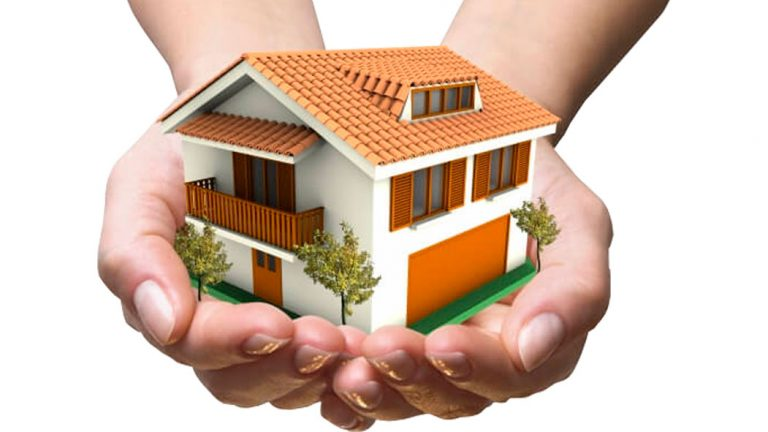
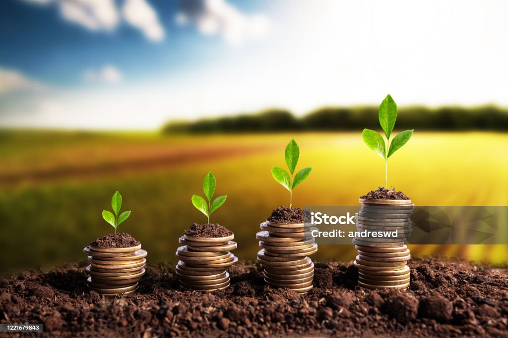
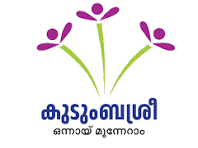
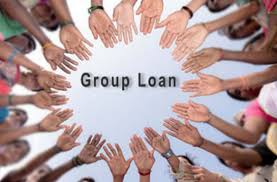
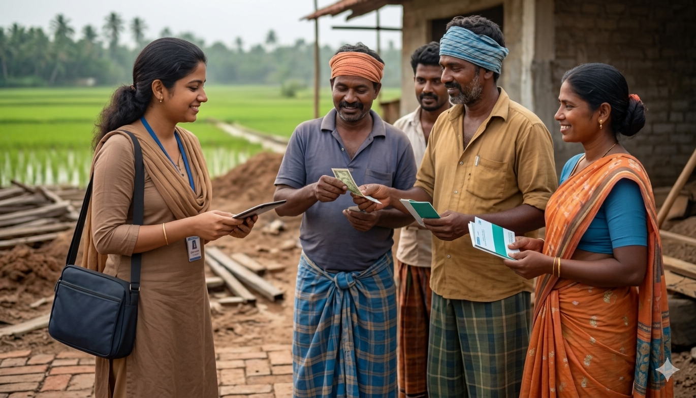
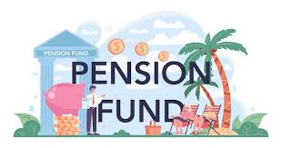
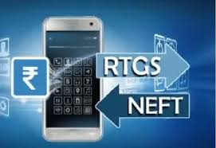
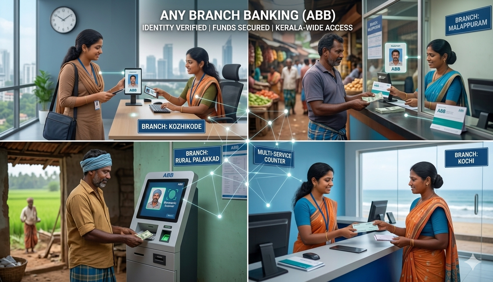

വായ്പകൾ (Loans)

നിങ്ങളുടെ സ്വപ്ന ഭവനം സ്വന്തമാക്കാൻ സഹായിക്കുന്നതിന് മികച്ച പലിശ നിരക്കുകളും ലളിതമായ തിരിച്ചടവ് വ്യവസ്ഥകളും.സ്വന്തമായി ഒരു വീട് എന്ന സ്വപ്നം യാഥാർഥ്യമാക്കാൻ സഹായിക്കുന്നതാണ് ഹോം ലോൺ. വീട് നിർമ്മാണം, വീട് വാങ്ങൽ, നവീകരണം എന്നിവയ്ക്കായി എളുപ്പമായ തിരിച്ചടവ് സൗകര്യത്തോടെയും ആകർഷകമായ പലിശ നിരക്കോടെയും വായ്പ ലഭ്യമാക്കുന്നു. കുടുംബത്തിന്റെ സുരക്ഷിതവും സന്തോഷകരവുമായ ഭാവിക്കായി വിശ്വസനീയമായ ധനസഹായം.
പെട്ടെന്നുള്ള അനുമതിയും കുറഞ്ഞ പലിശ നിരക്കും വഴി നിങ്ങളുടെ വാഹനം വേഗത്തിൽ സ്വന്തമാക്കുക.പുതിയ കാർ, ബൈക്ക്, ഓട്ടോറിക്ഷ അല്ലെങ്കിൽ വ്യാപാര ആവശ്യത്തിനുള്ള വാഹനങ്ങൾ സ്വന്തമാക്കാൻ സഹായിക്കുന്ന വായ്പയാണ് വാഹന വായ്പ. ലളിതമായ നടപടിക്രമങ്ങൾ, വേഗത്തിലുള്ള അംഗീകാരം, സൗകര്യപ്രദമായ ഇഎംഐ പദ്ധതികൾ എന്നിവയിലൂടെ നിങ്ങളുടെ യാത്ര കൂടുതൽ എളുപ്പമാക്കുന്നു.
നിങ്ങളുടെ സ്വർണാഭരണങ്ങൾ പണയം വെച്ച് അതിവേഗത്തിൽ സാമ്പത്തിക സഹായം ലഭ്യമാക്കുന്ന സൗകര്യമാണ് ഗോൾഡ് ലോൺ. വ്യക്തിഗത ആവശ്യങ്ങൾ, വിദ്യാഭ്യാസം, ചികിത്സ, ബിസിനസ് ആവശ്യങ്ങൾ എന്നിവയ്ക്കായി കുറഞ്ഞ രേഖാപ്രക്രിയയോടെയും ആകർഷകമായ പലിശ നിരക്കോടെയും വായ്പ ലഭ്യമാക്കുന്നു. സുരക്ഷിതവും വിശ്വസനീയവുമായി എളുപ്പത്തിൽ ലഭ്യമാകുന്ന ധനസഹായം.

കർഷകരുടെ കാർഷിക ആവശ്യങ്ങൾ നിറവേറ്റുന്നതിനായി രൂപകൽപ്പന ചെയ്ത വായ്പയാണ് കിസാൻ ലോൺ. കൃഷിചെലവുകൾ, വിത്ത്, വളം, ജലസേചന സംവിധാനം, കാർഷിക ഉപകരണങ്ങൾ എന്നിവയ്ക്കായി സാമ്പത്തിക സഹായം ലഭ്യമാക്കുന്നു. കുറഞ്ഞ പലിശ നിരക്കും സൗകര്യപ്രദമായ തിരിച്ചടവും വഴി കർഷകരുടെ വളർച്ചക്കും സമൃദ്ധിക്കും പിന്തുണ നൽകുന്നു.

സമൂഹത്തിലെ അംഗസംഖ്യയുടെ കാര്യത്തിൽ മുന്നിൽ നിൽക്കുന്ന സ്ത്രീകളുടെ സാമൂഹികവും സാമ്പത്തികവുമായ പിന്നോക്കാവസ്ഥക്ക് പരിഹാരം കാണുന്നതിന് വേണ്ടി രൂപീകരിക്കപ്പെട്ട കുടുംബശ്രീ /സ്വയംസഹായ സംഘങ്ങൾക്ക് വേണ്ട എല്ലാവിധ സഹായങ്ങളും പ്രോത്സാഹനങ്ങളും ബാങ്ക് നൽകിവരുന്നു.വായ്പകൾ മൂന്ന് വർഷം കാലാവതിക് 8.25% പലിശയിൽ മാസതവണ വ്യവസ്ഥയിൽ 10 ലക്ഷം രൂപ വരെ നൽകിവരുന്നു.
വാഹനങ്ങൾ, യന്ത്രങ്ങൾ, വ്യാപാര ഉപകരണങ്ങൾ തുടങ്ങിയവ എളുപ്പമായ മാസതവണകളിലൂടെ സ്വന്തമാക്കാൻ സഹായിക്കുന്ന ധനസഹായമാണ് ഹയർ പർച്ചേസ് ലോൺ. കുറഞ്ഞ മുൻകൂർ തുകയോടെയും സൗകര്യപ്രദമായ തിരിച്ചടവ് പദ്ധതികളോടെയും വായ്പ ലഭ്യമാക്കുന്നു. വ്യക്തിഗത ആവശ്യങ്ങൾക്കും ബിസിനസ് വളർച്ചയ്ക്കും അനുയോജ്യമായ വിശ്വസനീയമായ സാമ്പത്തിക പിന്തുണ.

സ്വയംതൊഴിൽ പ്രവർത്തനങ്ങൾ, ചെറുകിട സംരംഭങ്ങൾ, കാർഷിക അനുബന്ധ പ്രവർത്തനങ്ങൾ തുടങ്ങിയവ പ്രോത്സാഹിപ്പിക്കുന്നതിനായി ഗ്രൂപ്പുകൾക്ക് നൽകുന്ന ധനസഹായമാണ് ആക്റ്റിവിറ്റി ഗ്രൂപ്പ് വായ്പകൾ. അംഗങ്ങളുടെ കൂട്ടായ ഉത്തരവാദിത്വത്തോടെയും ലളിതമായ നടപടിക്രമങ്ങളോടെയും വായ്പ ലഭ്യമാക്കുന്നു. സാമ്പത്തിക സ്വയംപര്യാപ്തതക്കും സംരംഭക വളർച്ചക്കും ശക്തമായ പിന്തുണ നൽകുന്ന പദ്ധതി.
കൃഷിഭൂമിയുടെ വിസ്തീർണ്ണത്തിന്റെ അടിസ്ഥാനത്തിൽ കാർഷിക ആവശ്യങ്ങൾക്കായി ഒരു അംഗത്തിന് 2 ലക്ഷം രൂപ വരെ കെ. സി. സി വായ്പകൾ നൽകി വരുന്നു. നബാർഡിൽ നിന്നും കേരളം സഹകരണ ബാങ്ക് വഴി വായ്പ്പയായി ലഭിക്കുന്ന 50% വും ബാങ്കിന്റെ സ്വന്തം ഫണ്ടിൽ നിന്നും 50% വും ഉപയോഗിച്ചാണ് വായ്പ നൽകുന്നത്.ഒരു വർഷം കാലാവധിയുള്ള ഇത്തരം വായ്പകൾ കാലാവധിക്ക് മുമ്പ് തിരിച്ച അടക്കുന്നവർക്ക് 6% പലിശയിൽ 3% സബ്സീഡിയോടു കൂടി വായ്പ്പാ തിരിച്ചടക്കുന്നതിനോ പുതുക്കി എടുക്കുന്നതിനോ സാധിക്കുന്നതാണ്.
വിവിധ വ്യക്തിഗത, ബിസിനസ്സ് ആവശ്യങ്ങൾക്കായുള്ള കാർഷികേതര വായ്പകൾ ആകർഷകമായ പലിശ നിരക്കിൽ ലഭ്യമാണ്.
നിക്ഷേപങ്ങൾ (Deposits)
എല്ലാ ദിവസങ്ങളിലും എം. എസ്. എസിൽ ചേരാൻ കഴിയത്തക്ക വിധം 10 ലക്ഷം രൂപ വരെ സലയുള്ള നിക്ഷേപ പദ്ധതികൾ ഹെഡ് ഓഫീസിലും ബ്രാഞ്ചുകളിലും ലളിതമായ ജാമ്യവ്യവസ്ഥയിൽ നടത്തി വരുന്നു. 50,000 രൂപ വരെ രണ്ട് ആൾ ജാമ്യത്തിലും ,ഒരു ലക്ഷം രൂപ 3 അംഗങ്ങളുടെ ജാമ്യത്തിലും, ഒരു ലക്ഷം രൂപ മുതൽ ഒരു സാലറിയുടെയും ഒരു അംഗത്തിന്റയും മതിയായ ജാമ്യത്തിലും കൂടാതെ ഫിക്സഡ് ഡിപ്പോസിറ്റ്, സ്വർണം, ഗഹാൻ, രണ്ട സാലറി ജാമ്യം എന്നിവയിലും നൽകി വരുന്നു.

വീട്ടമ്മമാർ, കൂലിപ്പണിക്കാർ, കച്ചവടക്കാർ തുടങ്ങി ഓരോ നിക്ഷേപകന്റേയും വീടുകൾ, വ്യാപാരസ്ഥാപനങ്ങൾ എന്നിവിടങ്ങളിൽ പോയി നിക്ഷേപം സ്വീകരിക്കുകയും ഓണം, റംസാൻ സമയങ്ങളിൽ പലിശസഹിതം തിരിച്ച് വീടുകളിൽ നൽകുകയും ചെയ്യുന്ന ഈ പദ്ധതി ഏജൻ്റുമാരുടെ സഹകരണത്തോടെ വളരെ വിജയകരമായി നടത്തിവരുന്നു. ഇത് നല്ല നിലയിൽ വളരെ കാര്യക്ഷമമായി നടന്നുവരുന്നു.
60 വയസ്സുവരെ പ്രായമുള്ള ഈ ബാങ്കിലെ A ക്ലാസ്സ് അംഗങ്ങൾക്ക് ഈ പദ്ധതിയിൽ ചേരാവുന്നതാണ്. 100 രൂപ അടച്ച് ഈ പദ്ധതിയിൽ ചേരുന്നവർക്ക് 2000 രൂപയും 250 രൂപ അടയ്ക്കുന്നവർക്ക് 5000 രൂപയും മരണാനന്തരചടങ്ങുകൾക്കായി ബാങ്ക് അവരവരുടെ വീടുകളിൽ എത്തിച്ചുവരുന്നു.
ബാങ്കിലെ അംഗങ്ങൾ, നിക്ഷേപകർ, സ്വയംസഹായസംഘങ്ങൾ, പ്രവാസികൾ, ജീവനക്കാർ, സന്നദ്ധസംഘടനകൾ, വ്യക്തികൾ തുടങ്ങിയവരിൽ നിന്നും അംഗങ്ങളുടെ ലാഭവിഹിതത്തിൻ്റെ 25 ശതമാനത്തിൽ നിന്നും ധനം സമാഹരിച്ച് ക്യാൻസർ രോഗികൾക്കും ഡയാലിസിസിന് വിധേയരാകുന്നവർക്കും ധനസഹായം നൽകുന്ന പദ്ധതിയാണ്. ധനസഹായത്തിനുള്ള അപേക്ഷകൾ സ്വീകരിച്ച് ആയത് ഉടൻ നൽകിവരുന്നു. ഇങ്ങനെ സഹായിക്കുവാൻ സന്മനസ്സുള്ളവർക്ക് ബാങ്കിലെ SB A/C 27400 ൽ ധനം നിക്ഷേപിക്കാവുന്നതാണ്. ഇതുവരെ 4317500 രൂപ 646 പേർക്ക് ഇത്തരത്തിൽ ബാങ്ക് വിതരണം ചെയ്തിട്ടുണ്ട്.
മറ്റു സേവനങ്ങൾ (Other Services)
.jpeg)
ബാങ്കിന്റെ ചിതറയിലെ ഹെഡ് ഓഫീസിൽ കെട്ടിടത്തിലും, മടത്തറയിലെ ബ്രാഞ്ച് കെട്ടിടത്തിലും ന്യായമായ വിലക്ക് ഗുണമേന്മയുള്ള മരുന്നുകൾ സാധാരണക്കാർക്ക് ലഭ്യമാക്കുന്നതിന് വേണ്ടി നീതി മെഡിക്കൽ സ്റ്റോർ പ്രവർത്തിച്ചു വരുന്നു.
ബഹുമാനപ്പെട്ട കേരള ഗവൺമെൻ്റ് ക്ഷേമപെൻഷനുകൾ വീടുകളിൽ എത്തിക്കുക എന്ന ലക്ഷ്യത്തോടെ നടപ്പിലാക്കിയ പെൻഷൻ വിതരണം കുറ്റമറ്റ രീതിയിൽ പൂർത്തീകരിക്കുന്നതിന് ബാങ്കിന് കഴിഞ്ഞിട്ടുണ്ട്.
ബാങ്കിൽ ഇടപാടുകൾക്ക് വരുന്നവർക്കും പുറമെയുള്ളവർക്കും സഹായകരമായ രീതിയിൽ അപേക്ഷകളും മാറ്റ് സർട്ടിഫിക്കറ്റുകളും വിവിധതരം രേഖകളും ലഭ്യമാക്കുന്ന വിധത്തിലും ഇലക്ട്രിസിറ്റി ബില്ല്, ടെലിഫോൺ ബില്ല്,തുടങ്ങിയവ ഓൺലൈൻ ആയി അടയ്ക്കുന്നതിനും ബാങ്കിന്റെ ആഭിമുഖ്യത്തിൽ ഇ-സേവാ കേന്ദ്രം ഹെഡ് ഓഫീസിൽ മുൻഭാഗത്തുള്ള മുറിയിൽ പ്രവർത്തിച്ചു വരുന്നു.സ്വകാര്യ സ്ഥാപനങ്ങളുടെ നിരക്കിനേക്കാൾ വളരെ കുറഞ്ഞ നിരക്കിലും താമസം കൂടാതെയും സർട്ടിഫിക്കറ്റുകളും രേഖകളും ലഭ്യമാക്കി വരുന്നു.

ബഹുമാനപ്പെട്ട കേരള ഗവൺമെൻ്റ് നിർദ്ദേശപ്രകാരം 6 വർഷമായി 34 പെൻഷൻകാർക്ക് നമ്മുടെ ബാങ്ക് വഴി പെൻഷൻ വിതരണം ചെയ്തുവരുന്നു.
ബാങ്കിൻ്റെ ലാഭത്തിൽ നിന്നും വർഷംതോറും മെമ്പർ റിലീഫ് ഫണ്ടിലേയ്ക്ക് അടച്ചുവരുന്ന തുക ഗുരുതര രോഗബാധിതരായ അംഗങ്ങൾക്ക് കേരള സർക്കാർ ധനസഹായമായി വിതരണം ചെയ്യുന്നു.

സംസ്ഥാന സഹകരണ ബാങ്കും ജില്ലാ സഹകരണ ബാങ്കുകളും സംയോജിപ്പിച്ച് രൂപീകരിച്ച ബാങ്കാണ് കേരള സഹകരണബാങ്ക് അഥവാ കേരള ബാങ്ക്. സുരക്ഷിതവും വിശ്വസനീയവുമായ ആധുനിക ബാങ്കിംഗ് സേവനങ്ങളായ RTGS/NEFT, MOBILE, BANKING എന്നിവ കേരള ബാങ്കിലൂടെ നടത്തിവരുന്നു.
വായ്പാ കുടിശ്ശിക പിരിച്ചെടുക്കുന്നതിനായി ആത്മാർത്ഥമായി പരിശ്രമിച്ചുവരുന്ന ഇൻസ്പെക്ടർ തസ്തികയിലുള്ള ഒരു സെയിലാഫീസറുടെ സേവനം എല്ലാ ദിവസവും ബാങ്കിന് ലഭിച്ചുവരുന്നു. ഹെഡാഫീസിലേയും ബ്രാഞ്ചുകളിലേയും കണക്കുകൾ വളരെ കൃത്യമായി പരിശോധിച്ച് ആഡിറ്റ് ജോലികൾ യഥാസമയം പൂർത്തിയാക്കി വരുന്ന മൂന്ന് പേർ അടങ്ങുന്ന ആഡിറ്റ് ടീം ആണ് ഇപ്പോൾ കണക്കുകൾ കൈകാര്യം ചെയ്തുവരുന്നത്.
കർഷകർക്ക് ആവശ്യമായ വളങ്ങൾ മുൻകൂട്ടി സ്റ്റോക്ക് ചെയ്യുകയും ഗുണമേന്മയുള്ള രാസ-ജൈവ വളങ്ങൾ വളരെ കുറഞ്ഞ വിലയ്ക്ക് ചിതറ ഹെഡ് ഓഫീസിലെ വളം ഡിപ്പോയിൽ നിന്നും വിതരണം ചെയ്തു വരുന്നു. സബ്സിഡി വളങ്ങൾ പോസ് മെഷീൻ മുഖേനയാണ് ബില്ലുകൾ ചെയ്യുന്നത്. കർഷകരായ സഹകാരികളുടെ ആവശ്യാനുസരണം വളം ഡിപ്പോയുടെ പ്രവർത്തനം രാവിലെ 7.30 മണി മുതൽ വൈകീട്ട് 2.30 വരെയാണ്.റബ്ബർ കർഷകർക്ക് ആവശ്യമായ വളങ്ങളും റബ്ബർ പാൽ ഉൽപാദനവുമായി ബന്ധപ്പെട്ടതും റബ്ബർ കൃഷിയുമായി ബന്ധപ്പെട്ട എല്ലാവിധ സാമഗ്രി കാലും മിതമായ വിലയിൽ ലഭ്യമാണ്.

ബാങ്കിൻ്റെ പ്രവർത്തനപരിധിയിൽ സ്ഥിരതാമസക്കാരായ എസ്.എസ്.എൽ.സി., +2 പരീക്ഷകളിൽ ഫുൾ A+ നേടിയ വിദ്യാർത്ഥികൾക്കും ചിതറ ഗ്രാമപഞ്ചായത്തിലുള്ള സ്കൂളുകളായ ഗവ.എച്ച്.എസ്.എസ്. ചിതറ, എസ്.എൻ.എച്ച്.എസ്.എസ്. ചിതറ എന്നിവിടങ്ങളിൽ നിന്ന് എസ്.എസ്.എൽ.സി., +2 ക്ലാസ്സുകളിൽ ഫുൾ A+ നേടിയവർക്കും റാങ്ക് ജേതാക്കൾക്കും അതാത് വർഷങ്ങളിൽ ക്യാഷ് അവാർഡ് നൽകിവരുന്നു. കൃഷി ആഫീസുമായി സഹകരിച്ച് ചിതറ പഞ്ചായത്ത് പരിധിയിലുള്ള കർഷകരെ പ്രോത്സാഹിപ്പിക്കുന്നതിനായി കർഷക ദിനത്തിൽ ക്യാഷ് അവാർഡും മൊമെൻ്റോയും നൽകിവരുന്നു. പഞ്ചായത്ത് പരിധിയിലുള്ള സ്കൂളിലെ കുട്ടികൾക്ക് ദേശാഭിമാനി, ജനയുഗം പത്രങ്ങൾ വിതരണം ചെയ്തുവരുന്നു. സ്കൂളുകൾ, ആശുപത്രികൾ, പഞ്ചായത്ത്, വില്ലേജ് ഓഫീസ് എന്നിവിടങ്ങളിലേയ്ക്ക് ധനസഹായവും മത്സ്യകൃഷി, നെൽകൃഷി എന്നിവ നടത്തിയ കർഷകർക്ക് ധനസഹായവും നൽകിയിട്ടുണ്ട്.

ചിതറ ബാങ്ക് ഹെഡ് ഓഫീസ് വസ്തുവിൽ ഒരു ഷോപ്പിംഗ് കോംപ്ലസ് പ്രവർത്തിച്ചു വരുന്നു. ഇതിലെ കടമുറികൾ വാടകയ്ക്ക് ലേലത്തിൽ കൊടുക്കുന്നുണ്ട്. നാല് ഹാളുകളിൽ മൂന്നെണ്ണത്തിൽ കല്യാണത്തിനും മറ്റു ചടങ്ങുകൾക്കും ഉപയോഗിക്കാൻ കഴിയുന്ന വിധം ഒരു എ.സി. ഹാളും ഡൈനിംഗ് ഹാളും, ജനങ്ങൾക്ക് മിതമായ നിരക്കിൽ വാടകയ്ക്ക് നൽകി വരുന്നു.
ബാങ്കിലെ വായ്പക്കാരായ അംഗങ്ങളെ സർക്കാർ നടപ്പിലാക്കിയിട്ടുള്ള റിസ്ക് ഫണ്ട് പദ്ധതിയിൽ ഉൾപ്പെടുത്തി വരുന്നു. വായ്പ എടുത്തശേഷം മാരകരോഗം ബാധിച്ചവർക്കും, വായ്പ ബാക്കി നിൽപ്പുള്ള 6 മാസത്തിൽ കൂടുതൽ വായ്പാ കുടിശ്ശിക ഇല്ലാതെ മരണപ്പെട്ട 70 വയസ്സിൽ താഴെ പ്രായമുള്ളവർക്കും പരമാവധി 300000 രൂപ വരെ ധനസഹായം ലഭിക്കുന്ന പദ്ധതിയാണ്. വായ്പ എടുത്ത് കഴിഞ്ഞ് മാരകരോഗം ബാധിക്കുന്നവർക്ക് പരമാവധി 1,25,000 രൂപ ധനസഹായം ലഭിക്കുന്നതാണ്. ഇതിനുവേണ്ടി ഓരോ വായ്പാ കക്ഷിയും 100 ന് 70 പൈസ നിരക്കിൽ മിനിമം 100 രൂപയും മാക്സിമം 2000 രൂപയും 18% ജി.എസ്.ടി.യും ഓരോ വായ്പാ കക്ഷിയും അടയ്ക്കേണ്ടതുണ്ട്. അപേക്ഷ ലഭിക്കുന്നതനുസരിച്ച് എത്രയും വേഗം സഹായം ലഭിക്കുന്നതിനായി വേണ്ടുന്ന നടപടികൾ ചെയ്തുവരുന്നു. ഈ തുകകൾ വായ്പ കക്ഷികൾക്ക് യഥാസമയം ലഭിച്ചുവരുന്നു.

ഹെഡ് ഓഫീസിനെയും നാല് ബ്രാഞ്ചുകളെയും തമ്മിൽ ബന്ധിപ്പിച്ച് ഏത് ബ്രാഞ്ചിലൂടെയും ഇടപാടുകൾ നടത്തുന്നതിന് ഇതിലൂടെ സാധിക്കുന്നതാണ്. ആയതിനാൽ രാവിലെ 7.00 മണി മുതൽ രാത്രി 8.30 വരെ ഇടപാടുകൾ നടത്തുന്നതിന് സൗകര്യമുണ്ട്. ക്ലൗഡ് സംവിധാനത്തിൽ പ്രവർത്തിക്കുന്ന ബാങ്കിൽ നിന്നും എസ്.എം.എസ് സൗകര്യവും നിക്ഷപകർക്ക് ആർ.റ്റി.ജി.എസ്. / എൻ.ഇ.എഫ്.റ്റി. സൗകര്യവും ഉണ്ട്. കേരളം ബാങ്ക് മുഖേന മൊബൈൽ ബാങ്കിങ് സൗകര്യം, ICICI ബാങ്ക് മുഖേന QR കോഡ്, ഗൂഗിൾ പേ തുടങ്ങിയ ആധുനിക രീതിയിൽ ബാങ്കിലേക്ക് തുക അടയ്ക്കാവുന്നതാണ്.